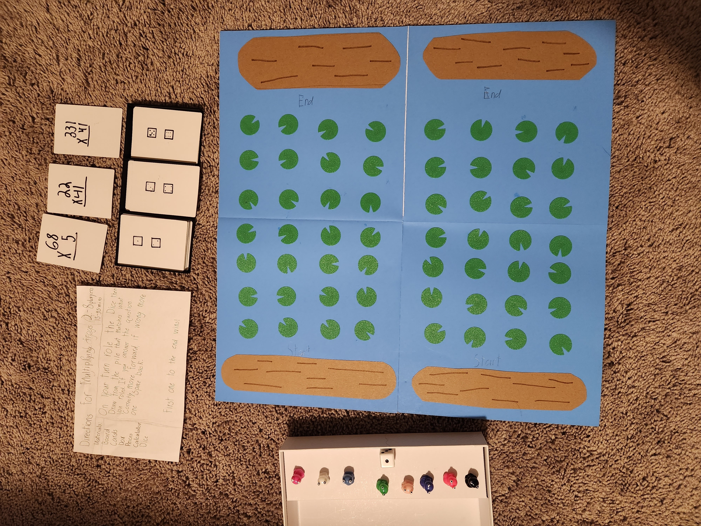

Reference material¶
Source material for the port. Nothing on this page is a decision — it is the physical artifact the design contract is derived from, kept here so a claim about the game can be checked against the board rather than against somebody's summary of it.
The normative statement of these rules — every one of them stated as an invariant for the code to be built against — is rules of play. This page describes the board Connor's class uses; that page describes the game this app implements, and the two differ where the project has recorded a rule change.
The classroom game¶
Multiplying Frogs is a board game from Connor's math class. Everything in
docs/specs/ describes a port of it, and
ADR-0001 makes it the
authority on every rule.

Photographed by Derek, 2026-08-08. Camera metadata stripped; the image is otherwise unmodified.
The rules card, verbatim¶
Directions for Multiplying Frogs — 2–8 players, 15–45 min
Materials: Board, Cards, Box, Peices, Calculator, Dice
On your turn role the Dice then draw from the pile that matches what you roled. If you answer the question correctly move forward. If wrong move one space back.
First one to the end wins!
Spelling as written — it is handwritten, by a child or a teacher.
What is in the photograph¶
| Component | What it is |
|---|---|
| Board | Folds down the middle. Each half holds four lanes of seven lily pads, running from a Start log to an End log. Eight lanes in total. |
| Frogs | Eight playing pieces, one colour each. One per player. |
| Die | One, six-sided, visible in the box. The rules card says "Dice"; three piles × two faces each accounts for exactly six faces. |
| Card piles | Three, each labelled with the two die faces that send you to it. |
| Calculator | Listed in the materials, for checking an answer rather than computing it. Paper is not listed because paper is ambient in a classroom. |
The pile labels¶
Legible in the photograph at full resolution, and matching the sample card laid beside each pile:
| Pile label | Roll | Problem shape | Sample card beside it |
|---|---|---|---|
| 2 pips, 1 pip | 1 or 2 | 2-digit × 1-digit | 68 × 5 |
| 4 pips, 3 pips | 3 or 4 | 2-digit × 2-digit | 22 × 41 |
| 6 pips, 5 pips | 5 or 6 | 3-digit × 2-digit | 331 × 41 |
Two faces per pile, so each difficulty comes up a uniform ⅓ of the time. That distribution is what the problem generator has to reproduce.
What the photograph does not settle¶
Two of these were confirmed by Derek in issue #170 after the photograph was taken. They are rules of the classroom game, recorded here because the board alone does not show them.
Frogs are independent¶
Every player keeps their own lane for the whole game. Frogs never share a lane, never pass one another, and never interact. Eight lanes, eight frogs, one each.
A player's entire state is therefore one number — how far up their own lane they are. There is no board state beyond that: no collisions, no blocking, no ordering between frogs.
The End log is the winning space¶
A frog wins by landing on the End log, not by reaching the last lily pad. The lane is therefore nine positions — the Start log, seven lily pads, and the End log — and winning takes eight correct answers from the start.
Confirmed by Derek in issue #185, after the board wireframe needed the number of spaces in a lane and the photograph could not settle it. The logs are symmetric: both ends of a lane are real positions a frog occupies, one as the floor and one as the goal.
The Start log is a floor, not a special space¶
A wrong answer moves you back one lily pad, exactly as the rules card says. The Start log is simply the bottom of the lane, so a wrong answer there leaves you where you are.
| Outcome | Effect |
|---|---|
| Correct | Forward one lily pad |
| Wrong, anywhere above the Start log | Back one lily pad |
| Wrong, on the Start log | Stay |
A clamp at the bottom rather than a special case. Worth stating precisely, because "move back one" written without a floor is an off-by-one waiting to happen.
Two of the three rows above are about the ends of a lane, so they are worth reading together:
| Position | What it is |
|---|---|
| Start log | Position 0. The floor — a wrong answer here moves nothing. |
| Lily pads 1–7 | The ordinary spaces. |
| End log | Position 8. The goal — landing on it wins. |
Still unsettled¶
- What the classroom game does after the first frog finishes. The card says only "First one to the end wins!" and stops there. Whether Connor's class keeps playing for second place is not recorded on the board or the card, and has not been recalled — so it stays unknown. v1 does not wait on it; see below.
- The full card deck is not photographed. The game generates problems rather than shipping the classroom deck, and the generator's constraints have to be derived from the real cards — issue #171.
Where v1 fills a gap the board leaves open¶
Recorded here so nobody later mistakes it for something the classroom game says.
Play continues after the first frog reaches the End log. The first frog home wins; the others keep taking turns. Derek's provisional call — "for now" — made because the board does not settle it, not because the board says so.
A game can be ended deliberately. Because play continues past the winner, a session needs a way to stop that isn't "everyone eventually finishes": a quit or end-game flow. This is purely ours — a cardboard game ends when you close the box, so there is nothing to be faithful to.
Anyone may end the game, and a confirm is the only thing in the way. Derek's call in issue #186. The device cannot tell who is holding it, so restricting the exit to a particular player was never enforceable — what protects a game in progress is that the confirm names the cost before it acts. See end-game confirm.
The game also ends on its own once every frog is home. The last frog to reach its End log finishes the game, and the results appear without anyone choosing to stop. Derek's call in the same issue.
Together those two decisions describe the whole of how a game finishes:
| How a game ends | Who caused it |
|---|---|
| Every frog reaches its End log | Nobody — the game ends itself |
| Somebody ends it early, with a confirm | Any player, on any turn |
There is no third way, and in particular there is no state where a finished game sits waiting to be dismissed. That is what makes the ordinary two-player game work without anyone ever opening the settings.
Only the first of those two routes is derivable from where the frogs are: every
frog's lane position can be checked fresh, at any moment, to see whether all of
them are home. The second cannot — a deliberate end can happen with frogs still
short of home, so nothing about lane position says it happened. Frogs.Core
computes the first fact every time it is asked and records the second the
moment it occurs; the game being over is the two facts combined with OR.